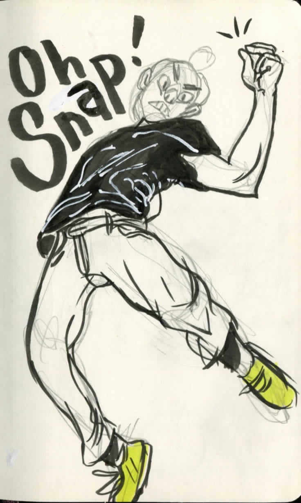

So Who is This Guy?
Sean Yager, a.k.a Shin, a.k.a Misuse of Mana, is a cartoonist and comic illustrator located in Austin, TX. By day he codes, creates, and maintains a myriad of websites for various clients. By night he summons creatures, camaraderie, and conflicts to enrich his comic universe, the realm of Amara.
SO What's his deal?
 He grew up in the Indiana cornfields swinging tree branch swords and imagining backyard adventures. Sean attended IUPUI and Herron School of Art for several years before deciding that college wasn’t going to hack it. He now works freelance for himself on the side while taking on coding jobs to pay the bills.
 Among his smattering of web based content he self publishes
his work, such as his poetry comic “IRE”, and the ambitious
Dungeons and Dragons inspired bestiary/game-ifiyed booklet
“Dungeons of Amara”. He also publishes monthly doodle zines
which are evolving into Dungeon World fan content, called “Zine
Cuisine” and has been doing so for almost three years. The name’s
probably gonna change soon to something more fantasy-esque.
Among his smattering of web based content he self publishes
his work, such as his poetry comic “IRE”, and the ambitious
Dungeons and Dragons inspired bestiary/game-ifiyed booklet
“Dungeons of Amara”. He also publishes monthly doodle zines
which are evolving into Dungeon World fan content, called “Zine
Cuisine” and has been doing so for almost three years. The name’s
probably gonna change soon to something more fantasy-esque.